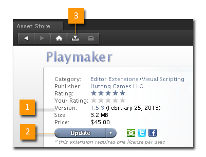
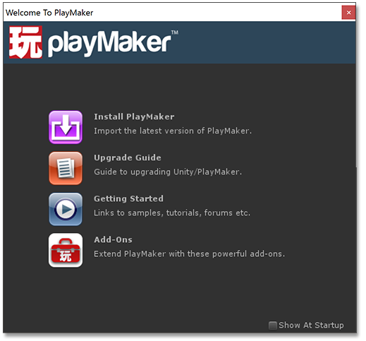

ALWAYS BACKUP YOUR PROJECT BEFORE IMPORTING OR UPDATING ASSETS!
MAKE SURE YOUR PROJECT HAS NO ERRORS IN THE UNITY CONSOLE BEFORE UPDATING!
If there are errors in the project the imported scripts will not compile until the errors are fixed.
Requirements
- Playmaker works with Unity 4.6 and higher.
- System requirements are the same as for Unity.
Installing from the Unity Asset Store
Open the Asset Store inside Unity: Main Menu > Window > Asset Store

- Click Version to check the Release Notes.
- Buy/Import/Update Playmaker.
- Import later from your Downloads.
Installing from our Online Store
- You should receive a download link for a Playmaker unitypackage or zip file
- If you downloaded a zip file, unzip it and find the appropriate Unity version folder.
- In Unity select Assets > Import Package > Custom Package and select the Playmaker unitypackage.
Welcome Screen
After importing you should see a Welcome Screen. If it doesn't open you can open it here:
Main Menu > PlayMaker > Welcome Screen

From the Welcome Screen you can:
- Install the latest version of Playmaker
- Review Upgrade Notes
- Find tutorials and download samples
- Go to add-ons available online
NOTE: If the project has errors the Welcome Window may not be available. In this case you can import Playmaker manually from:
Assets/PlayMaker/Editor/Install
Always BACKUP your project before updating Playmaker!
Installation Notes
- Check the version notes in the Installation tab. Unity 5.3 or higher requires PlayMaker 1.8 or higher.
- If you don't need Photon Networking, you can uncheck that folder on import or delete it afterwards.
- If you don't see Playmaker in the Main Menu, see Troubleshooting.
Update Notes
- Always backup projects before importing an update!
- It's a good idea to close the Playmaker Editor before updating.
- In the Unity 5.x import window you might see warning icons next to folders. These are okay to ignore.
- Sometimes Unity fails to rebuild assemblies after import. If you get errors please try restarting Unity.
See Also: